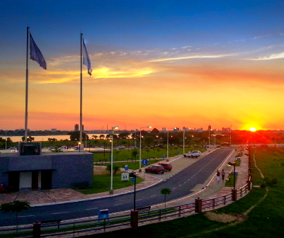
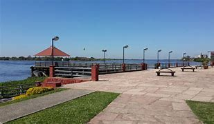
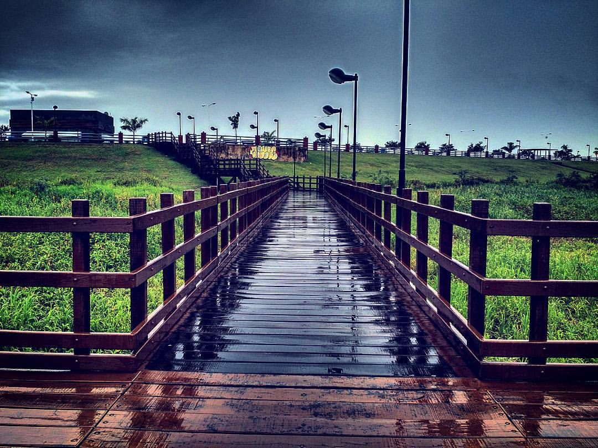

Formosa enamora
La ciudad de Formosa es la capital de la provincia. Situada en el nordeste argentino, a orillas del Rio Paraguay. Frente a la ciudad se puede apreciar el río desde una hermosa costanera. En algunas zonas el río forma meandros y lagunas, entre las que se destacan la Laguna Oca y la Laguna García, donde se ubica el corazón de la Reserva de Biosfera de Laguna Oca. Varios cursos de agua menores recorren la zona desde el noroeste hacia el sudeste. Entre ellos está el Riacho Formosa al norte y el Riacho El Pucú hacia el sur de la ciudad. Más al sur, el Riacho San Hilario. Rodeada de exuberante naturaleza, cuenta con hermosos paisajes y áreas de esparcimiento al aire libre, locales de entretenimientos para chicos y muchas cosas mas! Los primeros navegantes españoles que transitaron el Rio Paraguay, quedaron enamorados con la belleza natural, del lugar donde hoy se encuentra la ciudad de Formosa. Eligieron llamarla "Vuelta Fermosa" que significa "vuelta Hermosa". Ven a descubrir esta joven, alegre y cálida ciudad. Ven a vivir la sorprendente experiencia!
Geografia
La Provincia de Formosa está ubicada al nordeste de la República Argentina, integra la Región Chaqueña junto con las provincias de Chaco, norte de Santa Fe, este de Salta y Santiago del Estero. Limita al Norte y al Este con la República del Paraguay, al Oeste con la provincia de Salta y al Sur con la provincia del Chaco. El territorio provincial está organizado en nueve departamentos: Bermejo, Formosa, Laishí, Matacos, Patiño, Pilagás, Pilcomayo, Pirané, y Ramón Lista. Tiene como capital provincial a la ciudad homónima. Como ciudades importantes se destacan Clorinda, Pirané, Laguna Blanca, Ingeniero Juárez, entre otras. Se encuentra atravesada por selvas en galerías, humedales, sabanas, pastizales, palmares, ríos y riachos, donde habitan una gran variedad de especies vegetales y animales.
Clima
El clima predominante es cálido con altas temperaturas, cuyas medias anuales llegan a los 22°C, aunque también se han registrado máximas de 45°C y mínimas de -7°C. Las lluvias disminuyen de Este a Oeste, desde los 1.300 mm anuales, en la zona de capital, a menos de 700 mm anuales cerca del límite con Salta. Estas condiciones hacen que en la provincia se diferencien variedades climáticas: subtropical sin estación seca en el sector oriental Y subtropical con estación seca en la porción centro-occidental.